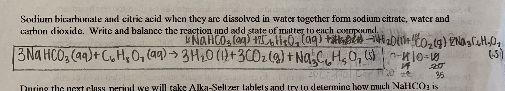
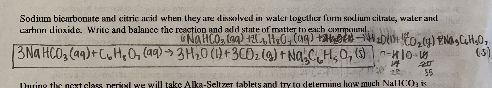

My Greatest Growth
I believe that my junior year at the Dayton Regional STEM School I grew in self-discovery and now understand myself better. According to Oxford Languages, self-discovery is “the process of acquiring insight in to one’s own character. During high school, we are pushed to learn our character, motivators, and passions so that we can make decisions on colleges and majors. Junior year we start looking at majors, careers, and colleges and start worrying about our collage transcripts, scores, and GPA. In order for me to be fulfilled in my future occupation, I needed to separate what I am passionate about and what has been pressured on to me. I believe that self-discovery is not only discovering one’s character, but also how you learn, what you enjoy, and your passions.
Artifact 1
Online learning has been an extremely large transition for me. Learning over Zoom is challenging because most of the time it feels that we are just watching seven hour long videos and there is not much interaction for online students. I am also not an auditory learner, so often I hear and take notes but don’t always understand the content. While in online learning, I was having issues with the learning style, did not have peer pressure motivating me, and did not have as much interaction with teachers. However, through the challenges, online learning taught me how I learn and understand information. An example of this is one of the Chemistry worksheets I was assigned. We were tasked with balancing an equation and I had taken notes on balancing and written examples, but still did not understand how to do it. The equation is extremely long and intimidating, so I decided to teach myself to understand how to balance equations. I watched multiple videos and looked at different websites before I tried it on the actual equation. I ended up finding a strategy that we did not learn in class that made more sense to me. I now understand how I learn, as well as how to balance equations.
 

Artifact 2
This past year I convinced my parents to let me try hockey, and I saved up money and bought myself gear. I had experience figure skating so I could skate in hockey skates, but I still did not understand positioning and could not stick handle. Everyone who tried out ended up making the team. Despite the fact that I was on the team, I still faced many challenges. I did not know any of the drills, I could not shoot or move a puck around with my stick, and I was not being played during games. This is a video of me playing in my first game. I quite clearly have no idea what I am doing, where the puck is going, and how to play my position. But I still continued playing and working hard because it was something that I realized I enjoyed doing. During the awards ceremony at the end of the season, the coach said that I had improved the most of anyone on the team.
Artifact 3
I have always enjoyed reading and am grateful for an education because I wouldn’t be able to read without it. Because of this I have always been connected with educating women because it is a privilege that I automatically received that many people have to fight for. Dayton is one of the hot spots for sex trafficking in the US due to the intersection of two major highways. I knew for a long time that I wanted my Gold Award to focus on preventing sex trafficking or help victims of sex trafficking, so when the project started I contacted a local shelter for women that have or are being trafficked called Oasis House. They hand out supplies on the streets, provide beds and showers for a night, provide longer term shelter, provide food, and offer safe houses. Many of the women that are victims of sex trafficking were taken around 12 or younger. This means that they are not able to receive a complete education and often have reading comprehension levels way below their age. I decided to combine my love of reading and wish to help victims of sex trafficking by creating a library in one of the safe houses. I hope that this will help the victims to cultivate a love of reading like I have or just offer them resources to help them on their path to receiving an education. This is my Gold Award proposal where I outline my plan, audience, and goals.
Click on Image to view and download PDF.
Conclusion
In conclusion, I have grown in self-discovery during junior year through determining how I learn, finding out what I enjoy, and discovering some of my passions. Knowing myself and my passions can help me senior year to choose my college and major and later on my career.
Outside Links
The Dayton Regional STEM School (Click Here)